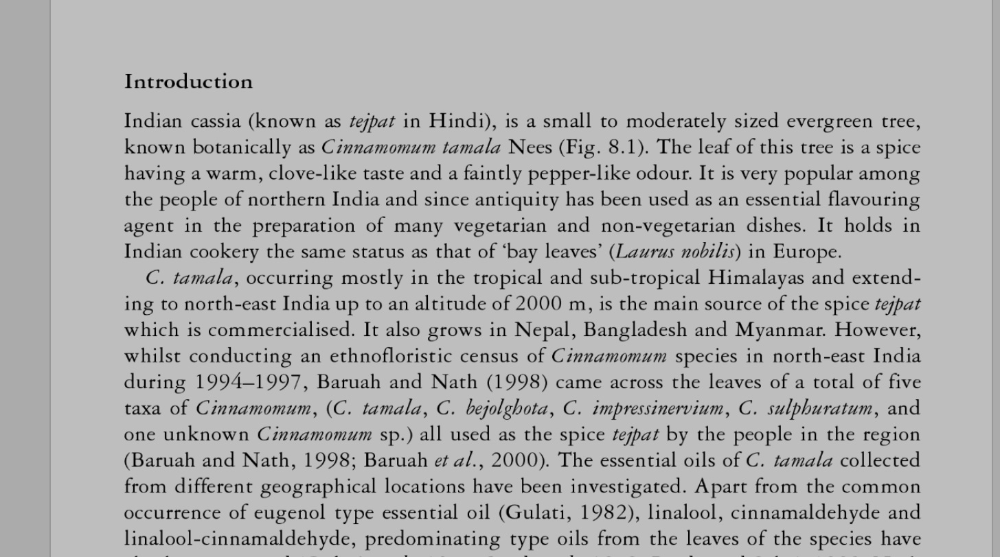

Featured
This is the home page of our 3-page website.
This is the home page of our 3-page website.
Details about the work page go here.
I'm a student in the multidisciplinary Bachelor of Media Studies program at the University of British Columbia. Currently, I create educational documentary videos on scientific topics for the Beaty Biodiversity Museum. In this role, I also collaborate with the exhibition and marketing teams to develop multimedia projects and generate content for social media. Previously, I trained as a post-production video editor at the Colorado Film School.
Email: morrisontulloch@gmail.com
LinkedIn: LINK HERE
Instagram: @thingsmomomakes